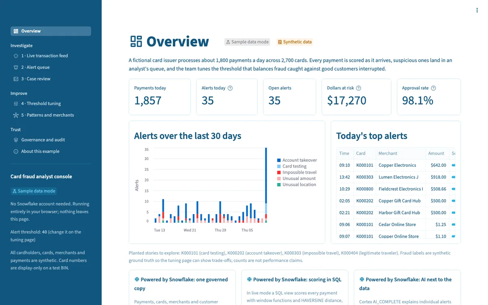
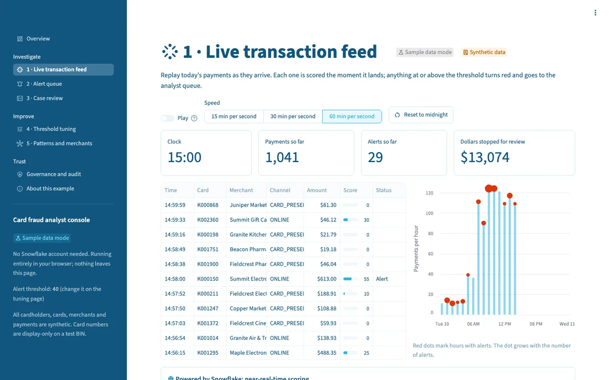
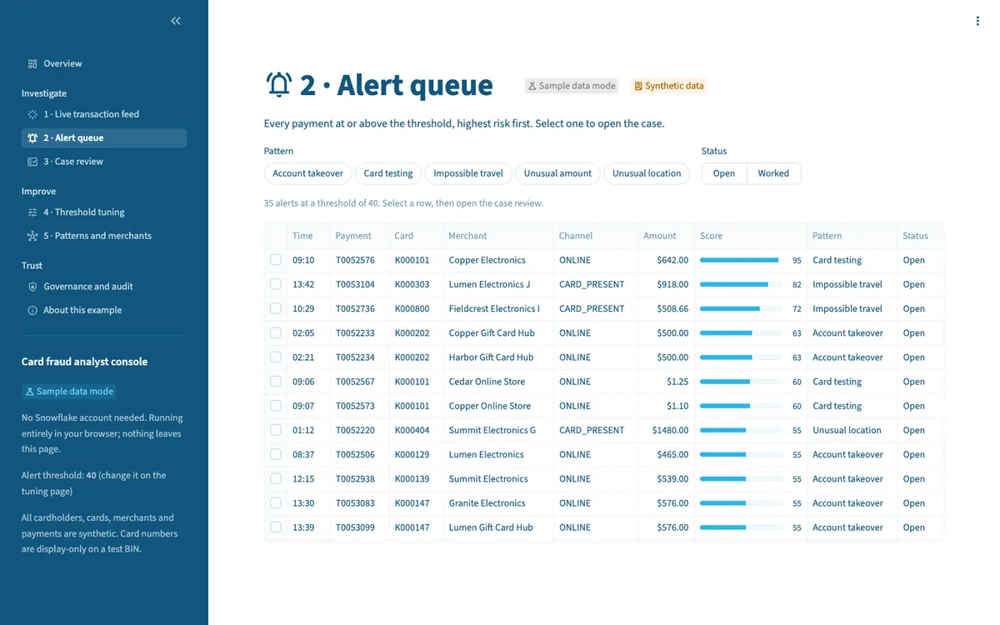
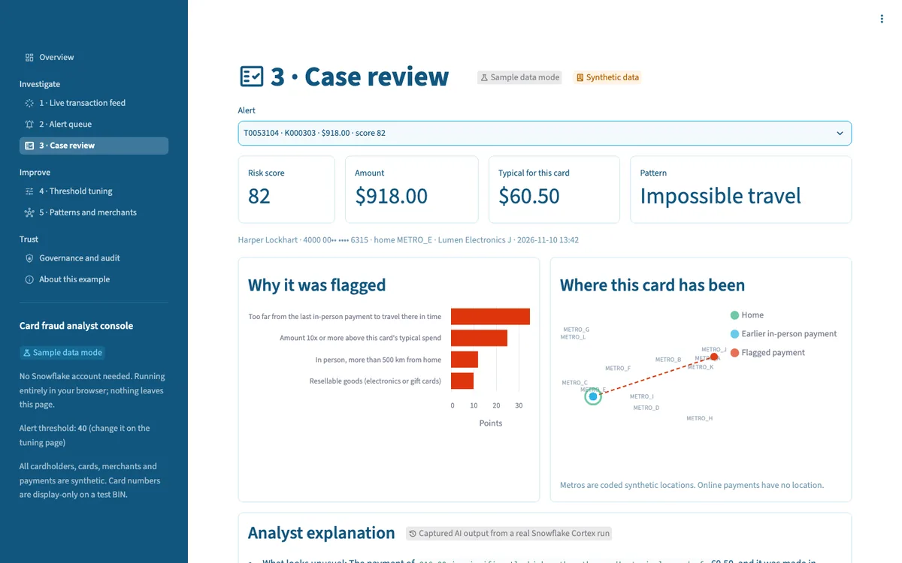
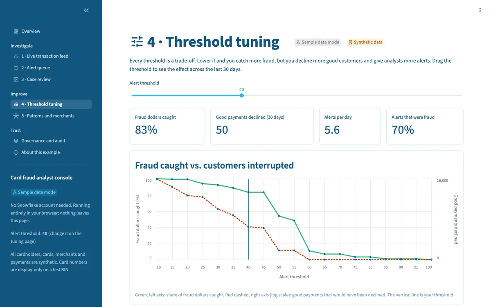
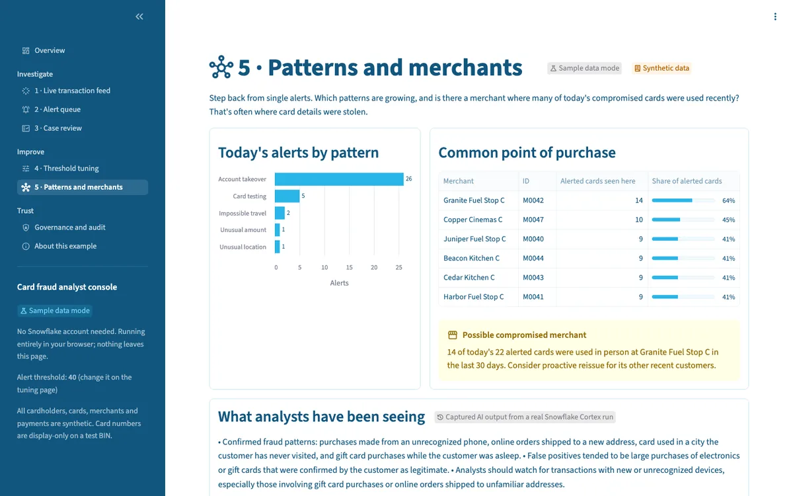
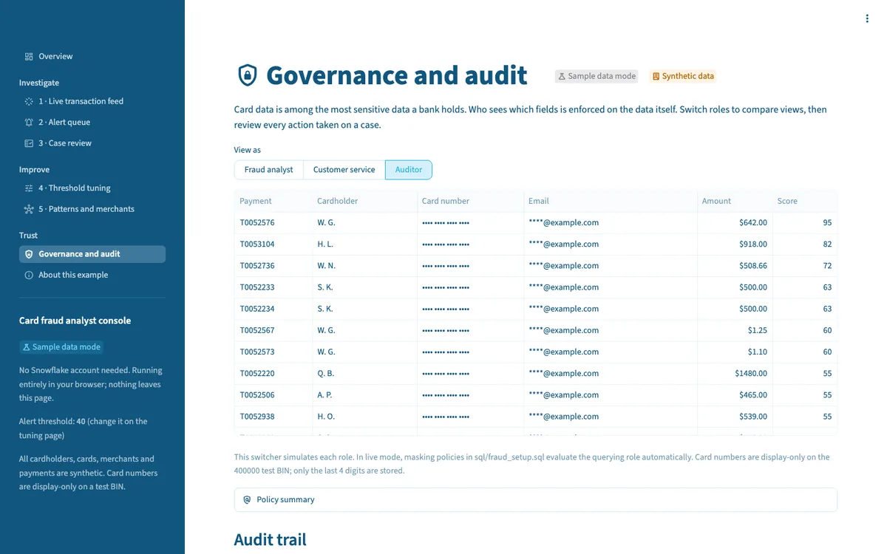

Every Decline Is a Trade-off
Card fraud teams must stop stolen-card spending within seconds, explain each decision, and avoid declining good customers who are simply traveling or buying something new. This console shows how one governed copy of payments, cards and merchants can support the whole loop: scoring, investigating, deciding and tuning.
Score
Every payment is scored as it arrives, from named signals computed in SQL.
Investigate
An alert queue sorted by risk, with the exact reasons behind each score.
Decide
A Cortex AI briefing for each case, then block, confirm or clear, with an audit trail.
Tune
See fraud caught, customers declined and team workload at every threshold.
The Finished Console
These are screenshots of the running app in sample-data mode, the same version you can open in your browser. Every cardholder, card, merchant and payment is synthetic.







Click Around First, Connect Later
The same Streamlit code runs both ways, so a business lead can explore it today and a technical team can run it on real infrastructure tomorrow.
Sample data, in your browser
- No Snowflake account, login or install
- Python runs in the browser with stlite
- Scores are computed with the same signals as the SQL view
- AI outputs are captured from a real Cortex run and labeled
Live, in your Snowflake account
- Deployed as Streamlit in Snowflake
- Scores from the
TXN_SCOREDSQL view - Live Cortex
AI_COMPLETEandAI_AGG - Masking policies on cardholder and card fields
- Case actions written to Snowflake
Deploy to Your Own Account
- Prerequisites: Enterprise Edition (masking policies), Cortex AI functions in your region, a compute pool for Streamlit's container runtime, and an external access integration for PyPI.
- 1. Run the setup script. Run Steps 1–4 of sql/fraud_setup.sql in a Snowsight worksheet. They create
FRAUD_DEMO_DB, an XSMALL warehouse, empty tables with policies attached, theTXN_SCOREDview and three audience roles. A least-privilege option is included at the top. - 2. Deploy the app. Clone the repo, set your compute pool and integration names in
snowflake.yml, then runsnow streamlit deploy --replace. - 3. Load the data. Open the app, go to About this example and select Load synthetic data.
- 4. Clean up. Uncomment and run Step 6 of the script to remove everything.
What Each Step Uses
Streamlit in Snowflake
The console runs next to the data, with the Snowflake session built in.
Window functions and HAVERSINE
Card testing, velocity and impossible travel, scored in one SQL view.
Cortex AI_COMPLETE and AI_AGG
Grounded case briefings and a summary across every analyst note.
Masking policies
Cardholder and card fields masked by role in every tool.